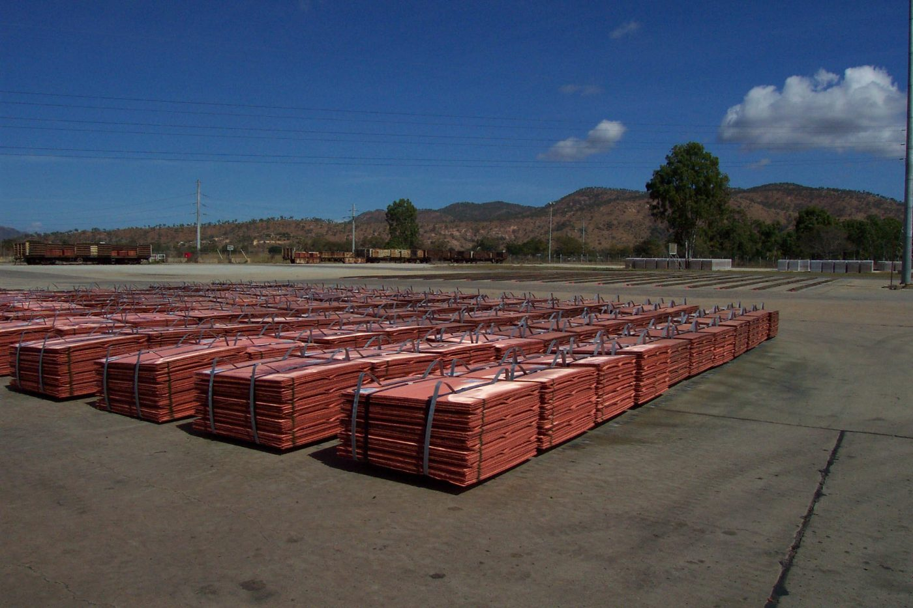

Informations financières et opérationnelles.
Kando Ressources n'est pas cotée. Cette page s'adresse à nos actionnaires, à nos prêteurs, à nos partenaires commerciaux et aux administrations. Les rapports sont publiés selon un calendrier fixe et restent accessibles en archive.
Faits saillants 2025
Chiffres illustratifs, à remplacer par les données de la société.
Production trimestrielle
| Période | Minerai traité | Cuivre cathode | Cobalt contenu | LTIFR |
|---|---|---|---|---|
| T1 2026 | 1,31 Mt | 15 800 t | 980 t | 0,38 |
| T2 2026 | 1,36 Mt | 16 400 t | 1 020 t | 0,41 |
| Exercice 2025 | 5,20 Mt | 61 400 t | 3 900 t | 0,42 |
| Exercice 2024 | 4,85 Mt | 56 200 t | 3 550 t | 0,55 |
Cuivre cathode et cobalt contenu dans l'hydroxyde. LTIFR : accidents avec arrêt par million d'heures travaillées.
Rapports et documents
- Rapport annuel 2025PDF · 6,4 Mo · 2026-03-27Télécharger
- États financiers audités 2025PDF · 2,1 Mo · 2026-03-27Télécharger
- Rapport de durabilité 2025 (vérifié)PDF · 9,8 Mo · 2026-05-15Télécharger
- Rapport de production, T2 2026PDF · 0,6 Mo · 2026-07-22Télécharger
- Déclaration ITIE 2024PDF · 1,2 Mo · 2025-12-10Télécharger
- Plan de gestion environnementale et sociale (résumé)PDF · 3,3 Mo · 2025-09-01Télécharger
- Politique de diligence raisonnable sur les mineraisPDF · 0,4 Mo · 2025-06-30Télécharger
- Code de conduite et politique anticorruptionPDF · 0,5 Mo · 2024-11-12Télécharger
Calendrier
- 21 octobre 2026
Rapport de production du troisième trimestre 2026
- 27 janvier 2027
Rapport de production du quatrième trimestre et de l'exercice 2026
- 26 mars 2027
Résultats annuels 2026 et rapport annuel
- 29 avril 2027
Assemblée générale des actionnaires, Kolwezi
Structure du capital
90 % Kando Holdings Ltd · 10 % République démocratique du Congo (participation non diluable prévue par le Code minier de 2018).
Paiements à l'État (ITIE)
| Année | Redevance minière | Impôt sur les bénéfices | Droits de douane | Taxes provinciales | Total |
|---|---|---|---|---|---|
| 2023 | 38,1 | 27,4 | 11,9 | 6,2 | 83,6 |
| 2024 | 44,7 | 33,0 | 13,5 | 7,1 | 98,3 |
| 2025 | 52,9 | 40,6 | 15,8 | 8,7 | 118,0 |
Millions de dollars US. Redevance minière, impôt sur les bénéfices et profits, droits et taxes de douane (DGDA), taxes provinciales et locales. Données rapprochées dans le cadre de l'ITIE-RDC.
Contact investisseurs
Pour toute question sur les résultats, les rapports ou le calendrier.
Recevoir les communiqués par e-mail
investisseurs@kando-ressources.example